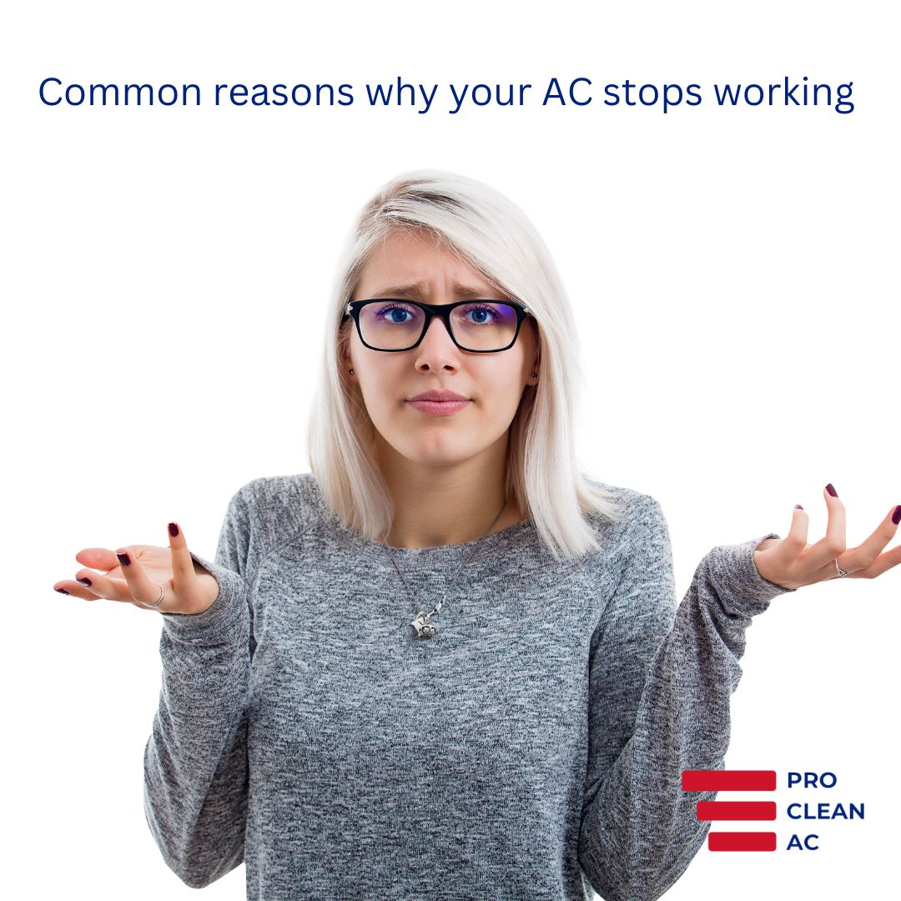
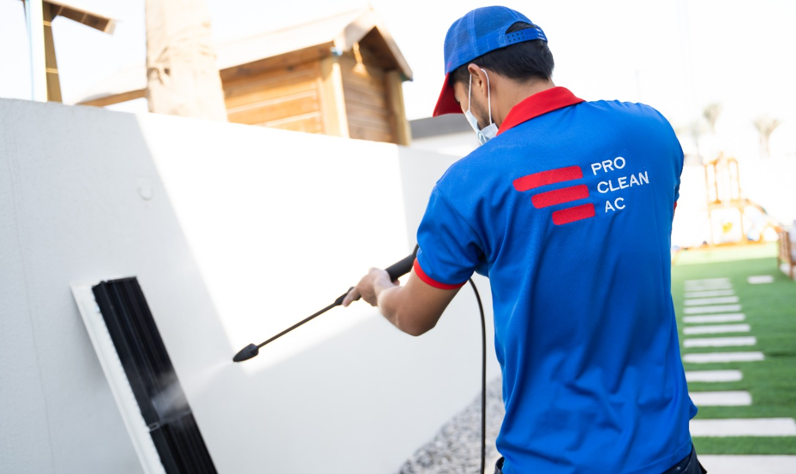
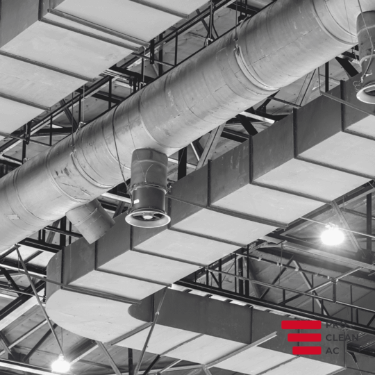
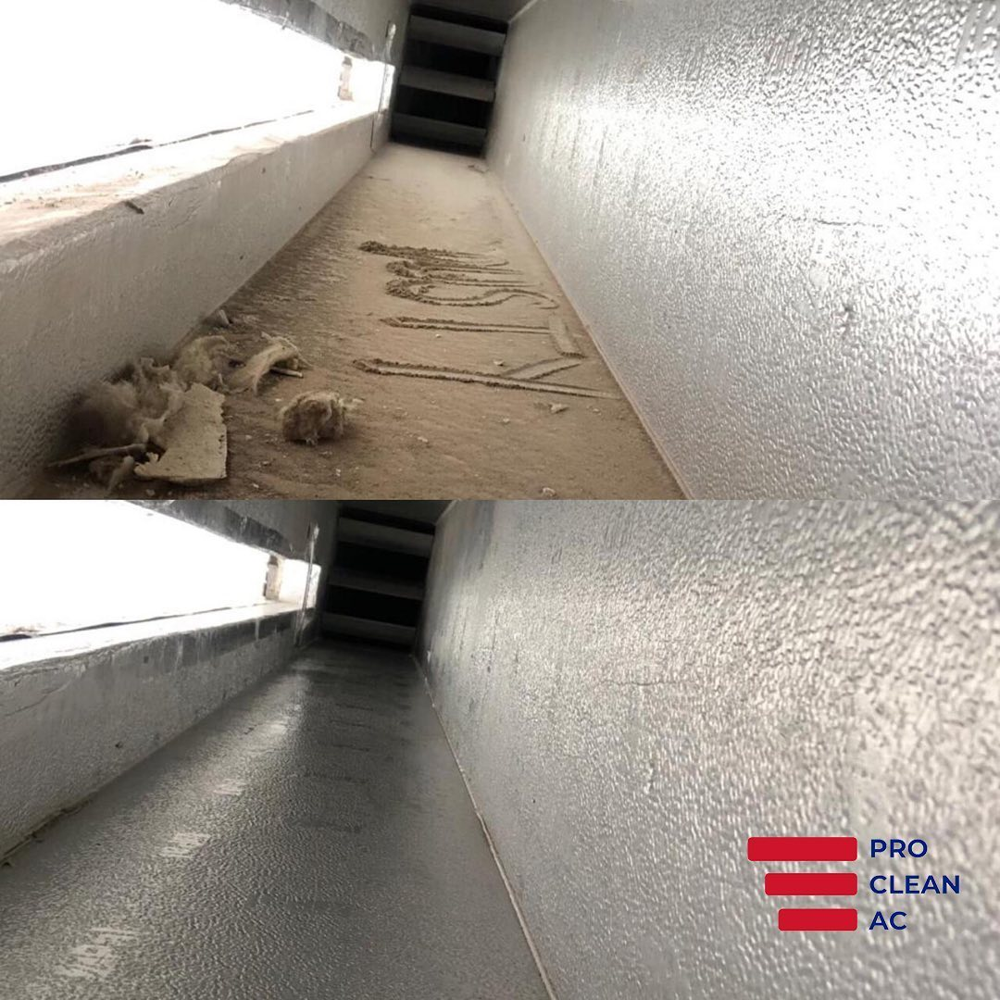
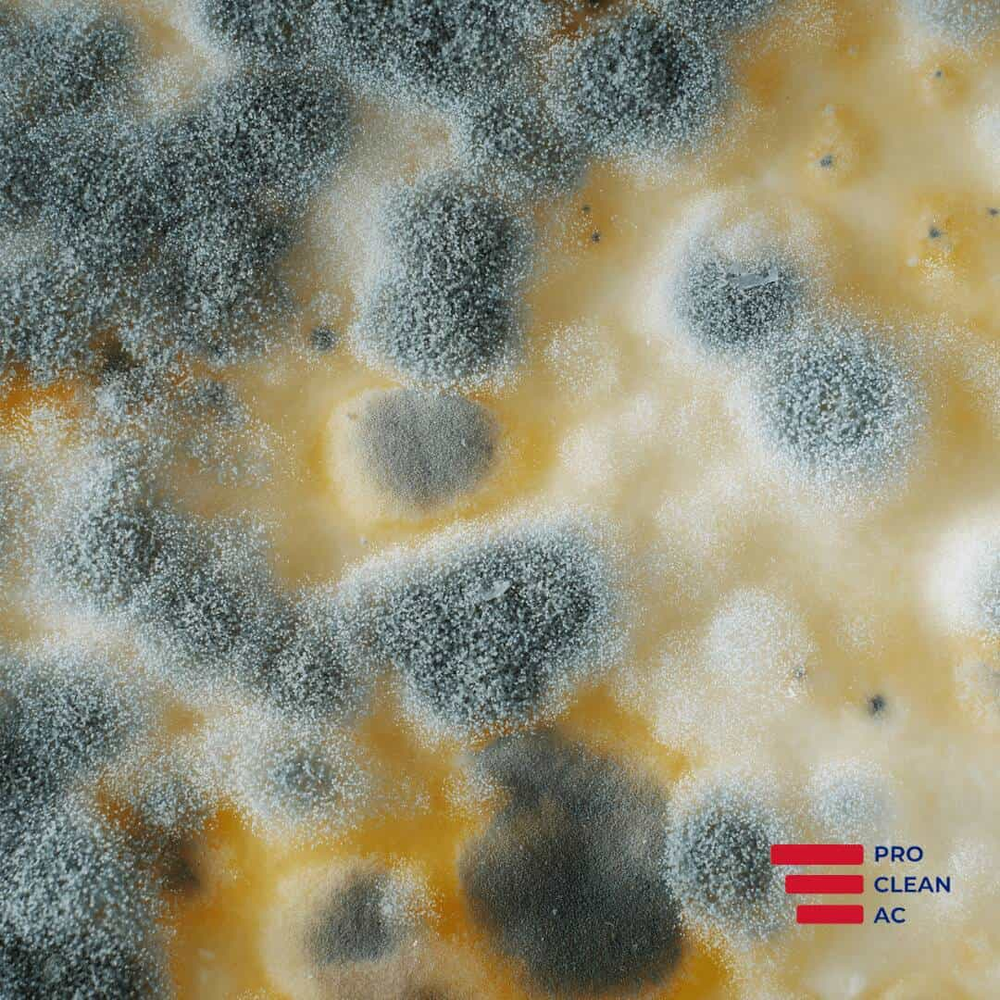

Home
About
Our Services
Duct Cleaning
Sanitisation
Coil Cleaning
AC Cleaning
Location
Dubai
Abu Dhabi
Blog
Contact Us
Combos
CTA
Footers
Forms
Galleries
Heros
Icons
Links
Metrics
Navigation Bars
Pricing
Quotes
Tabs
Text
Videos
Contact Us
Call Us
Browse Blog:
AC Cleaning
No items found.
Latest Articles
Mould in Air Ducts: Facts, Signs and How to Deal With It
The Unexpected Enemy: Understanding and Combating Humidity in Your Dubai Home
How Weather Impacts Your AC Performance in Dubai
Why Is There So Much Dust in My House?
Insight and news from our team.
AC Cleaning
September 5, 2025
Mould in Air Ducts: Facts, Signs and How to Deal With It
AC Cleaning
September 5, 2025
The Unexpected Enemy: Understanding and Combating Humidity in Your Dubai Home
AC Cleaning
September 5, 2025
How Weather Impacts Your AC Performance in Dubai
AC Cleaning
September 5, 2025
Why Is There So Much Dust in My House?
AC Cleaning
September 5, 2025
How Sandstorms in Dubai Affect Your AC System
AC Cleaning
July 10, 2025
The Role of AC in Emirati Homes: More Than Just Cooling
AC Cleaning
June 16, 2025
Air Conditioning and Humidity Control in Dubai: Achieving Optimal Comfort
AC Cleaning
April 18, 2025
How Dust and Sand Damage Your AC System in Dubai
AC Cleaning
March 4, 2025
Can Air Conditioning Cause Headaches?
AC Cleaning
January 21, 2025
Discover The Secrets To A Dust-Free Home
AC Cleaning
December 26, 2024
Air Duct Sanitising & Disinfecting: What Is It?
AC Cleaning
October 23, 2024
Ice on the AC Evaporator Coil During Summer?
AC Cleaning
July 29, 2024
Is it Normal for an Air Conditioner to Run Non-Stop? Insights from Pro Clean AC
AC Cleaning
July 29, 2024
Mastering Year-Round Coolness in Dubai: Optimal AC Maintenance Tips
AC Cleaning
May 28, 2024
Importance & Benefits of Commercial Air Duct Cleaning
AC Cleaning
May 10, 2024
Can Dirty AC Make You Sick?
AC Cleaning
April 8, 2024
Top Signs Your AC Needs Cleaning and Maintenance
AC Cleaning
February 20, 2024
AC Sanitisation: Ensuring Clean and Healthy Air in Your Dubai Home
AC Cleaning
February 20, 2024
Preparing Your Air Conditioner for Summer
AC Cleaning
January 19, 2024
5 Tips To Maintain Air Ducts After Duct Cleaning
AC Cleaning
December 20, 2023
Common Household Products That Could be Polluting Indoor Air
AC Cleaning
December 20, 2023
The Difference Between DIY Duct Cleaning Methods And Professional Duct Cleaning Services
AC Cleaning
December 20, 2023
Why Is My Air Conditioner Constantly Running?
AC Cleaning
December 20, 2023
Weird AC Smell: How Do I Get Rid of It?
AC Cleaning
December 20, 2023
Why is my AC vent blowing hot air even when it's turned off?
AC Cleaning
December 15, 2023
What is the difference between air conditioning and ventilation?
AC Cleaning
December 15, 2023
What Is The Difference Between AC Ducts & Air Vents
AC Cleaning
November 17, 2023
Why Is Your AC Drip Pan Overflowing with Water?
AC Cleaning
November 17, 2023
How Often Should AC Coils Be Cleaned?
AC Cleaning
November 17, 2023
How do I Know If My Evaporator Coil is Dirty?
AC Cleaning
October 5, 2023
The Effects Of Poor Duct Cleaning On Allergies And Respiratory Health in Dubai
AC Cleaning
August 5, 2023
Common Misconceptions About Air Conditioning Cleaning And The Truth Behind Them
AC Cleaning
August 5, 2023
How To Choose A Reputable And Reliable Duct Cleaning Company
AC Cleaning
August 5, 2023
5 Reasons Why You Need to Service Your Air Conditioner Regularly
AC Cleaning
May 31, 2023
What Should You Expect From an Air Conditioning Cleaning Service?
AC Cleaning
April 2, 2023
5 AC Maintenance Tips to Increase the Performance of Your Unit
AC Cleaning
February 1, 2023
How Duct Cleaning can Improve the Efficiency of your HVAC System
AC Cleaning
January 23, 2023
The Importance of Regular Duct Cleaning for Maintaining Indoor Air Quality
AC Cleaning
January 8, 2023
Ways to Reduce Electricity Bill While Using Your AC

AC Cleaning
October 28, 2022
Most Common Air Conditioner Problems You Should Know About
AC Cleaning
September 20, 2022
Why is my Air Conditioner leaking?
AC Cleaning
July 24, 2022
Top 5 Air Conditioner Maintenance Tips You Need to Know
AC Cleaning
July 5, 2022
Most Common Air Conditioner Myths
AC Cleaning
June 27, 2022
5 Easy Ways to Increase the Life of Air Conditioner
AC Cleaning
June 9, 2022
Which Mould Types Are Most Commonly Found In Your Air Ducts?
AC Cleaning
April 5, 2022
Tips for Better Indoor Air Quality in 2022
AC Cleaning
March 20, 2022
How to Get Ready for a Professional Duct Cleaning Appointment
AC Cleaning
March 8, 2022
Important Questions to Ask Before Hiring a Duct Cleaning Company

AC Cleaning
March 8, 2022
Tips to Prevent Mould in Your Air Duct System
AC Cleaning
September 19, 2021
Duct Cleaning and Allergies in Dubai

AC Cleaning
September 13, 2021
How Often Should You Get Your Air Ducts Cleaned in Dubai?
AC Cleaning
September 7, 2021
What Happens When You Don't Clean Your AC in Dubai
AC Cleaning
July 15, 2021
The Benefits of Duct Cleaning

AC Cleaning
April 9, 2021
The Importance of Duct Cleaning in Dubai

AC Cleaning
April 9, 2021
The Dangers of Mold in your Air Conditioner
AC Cleaning
November 2, 2020
5 Signs Your Air Ducts Need Cleaning
AC Cleaning
April 10, 2020
Can AC Spread Corona Virus?
AC Cleaning
April 10, 2020
Why AC Cleaning is Important in UAE
Pro Clean AC - Newsletters
Stay in the loop with Pro Clean AC for when the time is right.
I agree to the
Terms & Conditions
Thank you! Your submission has been received!
Oops! Something went wrong while submitting the form.


.jpg)

.jpg)
.jpg)


).png)

.png)


.png)
.png)
.png)
.png)

.png)
.png)
.png)
.png)


.png)
.png)
.png)
.png)
.png)

.png)
.png)
.png)